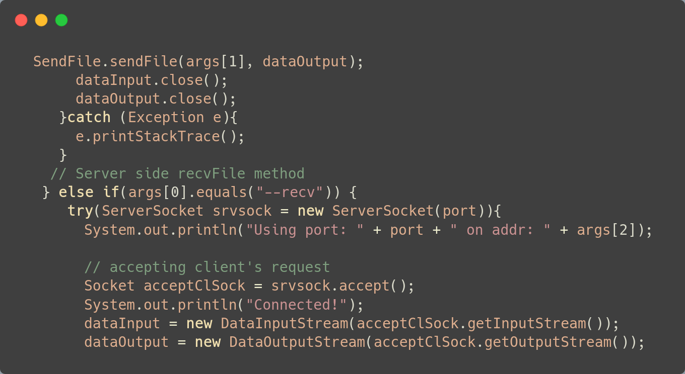

- Banter
- A peer to peer file sharing application to facilitate the transfer of intel
inside the college organization.
 - Kumo
- A webcrawler made in Java that uses postgres as it's database
- ArchConfig
- An Arch Linux configuration script that installs the dotfiles and
necessary packages, drivers and utilities after a base OS install